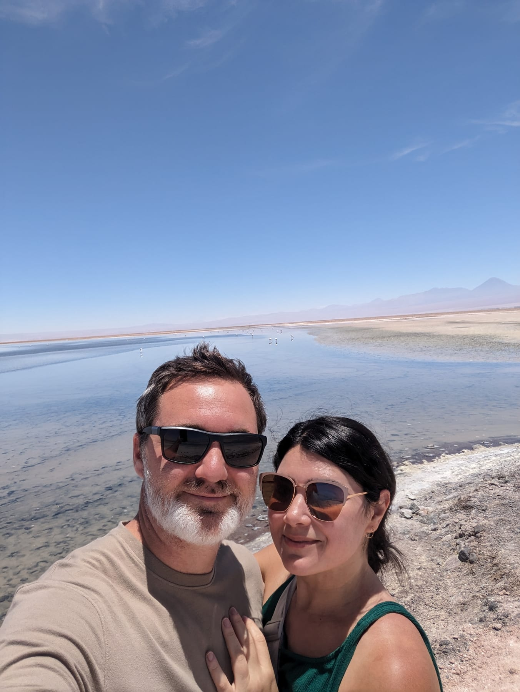
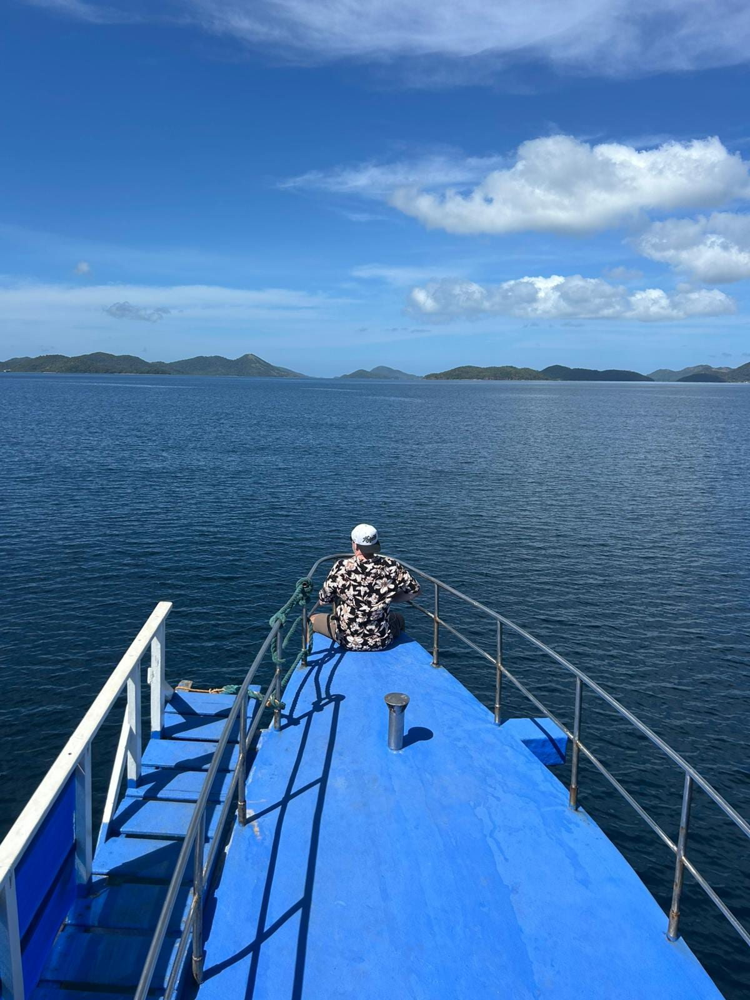

Hi, I'm James. I like figuring things out.
Seattle, by way of Florida. Married, well travelled, happiest in a kayak. I've spent my career making messy data useful for banks, and I build small tools when a problem won't leave me alone.


The short story
My first real job was in collegiate athletics at UCF. I helped build a student section brand called The Knightmare, worked on ticket sales, and built the dashboards that told us how we were doing.
Then sports consulting: sponsorship valuations, negotiations, dashboards for executives who needed an answer by Friday. That's where I noticed the pattern. The data usually exists. What's missing is someone willing to make it legible.
Banking technology came next, and lately my own tools. The scale changed. The problem didn't.
Things I do
~Kayak, as often as I canPuget Sound at home. Maui when we're lucky.
✈Travel on pointsChurning credit cards pays for most of it.
→Run long distancesDistance first, speed never.
⌂Grow thingsMixed results. The arugula is winning.
≡Read historyIt explains more than it should.
+Build small toolsFor problems that annoy me. Two grew up.
Places




In chapters
2011–2016Collegiate athletics
2016–2018Sports consulting
2018–2021Independent
2019–nowBanking technology
NowBuilding my own tools